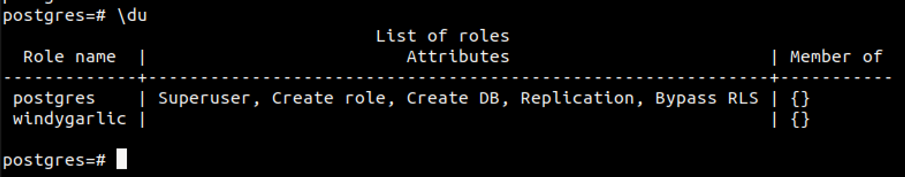
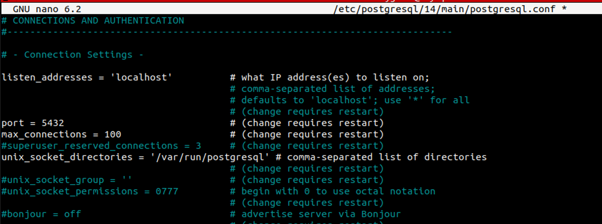
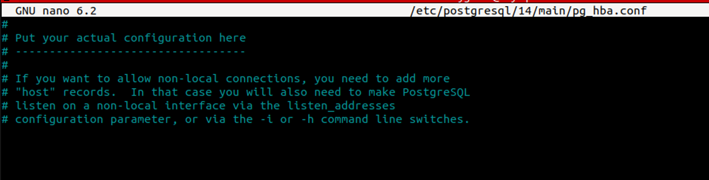

I've decided to push the web server guide back a bit, as i have something currently in the works for it. So instead, we'll walk through the steps to set up a PostgreSQL server. This will include steps to create a new user, and assign the correct permissions to the new user to ensure your PostgreSQL server is secure and ready for use.
Step 1: Install PostgreSQL
First, make sure PostgreSQL is installed on your system. For Debian-based systems (like Ubuntu), you can install it using:
sudo apt update sudo apt install postgresql postgresql-contrib
We then want to start the service, and enable it so that it wil start when we boot the server.
sudo systemctl start postgresql sudo systemctl enable postgresql
Step 2: Access the PostgreSQL Command Line
With that done, we should be able at access the postgres user.
sudo -i -u postgres
Once we are logged in as the postgres user, we can access the CLI
psql
Step 3: Secure the PostgreSQL Root Account
By default, PostgreSQL uses the postgres user as the root account. It's crucial to set a strong password for this account. In the PostgreSQL CLI, set a password for the postgres user:
\password postgres
You'll be prompted to enter and confirm the new password.
Step 4: Create a User and Database
To create a new user, use the following command, replacing newuser with your new username and newpassword with your new password:
CREATE USER newuser WITH PASSWORD 'newpassword';
We can use this command to check the users and their roles and attributes
\du
To create a database you can use the comand
CREATE DATABASE yourdatabase;
Step 5: Assign Permissions to the New User
Next, assign appropriate permissions to the new user. For example, to grant all privileges on a specific database to the new user, use:
GRANT ALL PRIVILEGES ON DATABASE yourdatabase TO newuser;
We now have a user account that has access and premissions to the specified database. We can now create tables and start adding data.
Step 6: Disable Remote Access
You will want set the hosts that are allowed to connect. This is a step that everyone should take to secure their psql server and data. We can do this by checking the postgresql.conf.
exit sudo nano /etc/postgresql/14/main/postgresql.conf
* Note - That /14/ is a version number. Depending on your version of postgrsql, this number may be different.
We will want to check this file and find the line that says listen_adresses = and change it to:
listen_adresses = 'localhost'
This will disable remote access to PostgrSQL. I would recomend doing this and configuring the allowed hosts one by one as needed by editing the /etc/postgresql/14/main/pg_hba.conf file.
Or you could follow this guide to configure ssl for postgresql.
After making any changes to the config files, you should restart the service.
sudo systemctl restart postgresql
Conclusion
We can now access the server with the following command
psql -U newuser -d yourdatabase -h 127.0.0.1
By following these steps, we have set up a PostgreSQL server, created a new user, and assigned appropriate permissions to the new user. Your PostgreSQL server is now configured and ready to use.